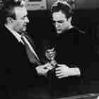

"And when Baal saw corpses all around
never had he felt less cause for gloom.
Lots of space, said Baal; we aren't enough to count.
Lots of space inside this woman's womb."
- Bertolt Brecht "Chorale of the Great Baal"

In his first one person show, Tiger Moss literally blew away at least one member of his
audience, and I'm just glad it wasn't me. On April 2nd 1994, Chicago performance artist, Tiger
Moss, shot an audience member three times with a .44 caliber hand gun live in front of an
audience of over fifty people. At the time, this stock broker appeared to be randomly chosen out
of the audience when Moss asked for the assistance of a salesman to "execute" the performance.
Paramedics were called to the scene, but the man was dead before they arrived. The audience
who had gathered at Randolph Street Galley for his latest performance piece, "The Death of a
Salesman" had been expecting what had been billed as another of Moss' explosive monologues,
but were witness instead to murder.
The RSG performance commitee which had curated the piece, and members of the NEA
panel which had commisioned the piece all seemed equally shocked, as one of the curators, who
asked to remain anonymous said, "We thought he was just going to yell, at worst, get naked
and masturbate. It wasn't the piece we had seen on the video at all." Although he had used the
space to practice a monologue and had recreated the minimal stage set described in Arthur
Miller's play, the performance lasted only minutes-Tiger entered from one of the wings and
asked for his volunteer. Most in the audience thought the gun and the blood were fake. Even
when the gun shot out the spot light on the stage and the exit light at the rear of the
performance space, most suspected it was illusion. By the time the house lights were turned on
and the wounds found to be real, Moss was gone. He was picked up later that night attempting
to buy Heroin at the Duk's Restraunt on Ashland and Blackhawk.
Although some people, including the reviewer for Chicago's weekly Reader have called it
"a senseless and stupid display, a gratuitous act of violence," I'm here to disagree.. It wasn't.
The Reader's staff cannot be altogether blamed, they did not have all the information which has
surfaced since their review has been published. Despite even Moss' own discounting, this
information seems to describe a sophisticated logic, albiet horribly morbid, which lead to this
act.
"I wanted to show them something real and immediate, I'm so tired of theatricality- in life
and in art. I was trying to demand an alternative." Moss explained, "I felt my monologues
could only go so far, this country allows you to say whatever you want as long as it doesn't
change anything. I wanted to question the way in which action is divided off from
representation--;I felt that I had reached a limit and I couldn't go past it- but somehow I had to,
then I found a way." When asked if he felt guilty about the extremes he had gone to he
answered with his now trademark bravado, "No, not at all, I think the audience should feel
guilty--; I never would have done it if they hadn't come… it was their blood lust I was feeding. I
just gave them what they begged for." When asked how he planned to defend himself he
suggested that what he had done was clearly framed as an art act, and therefor protected under
the first amendment.
Since the night of the performance much of the focus has been shifted from Moss to his
supposed "victim." Several things have come to the attention of the police which complicate the
crime, making it much more difficult lay all the guilt on Tiger and to determine the exact
nature of the crime itself. A letter, which can only be described as a suicide note, in what has
been verified to be the victim's own handwriting, was found left on his desk. In the letter he
mentioned that he was experiencing severe depression and anxiety recently and he felt that he
could no longer provide for his family. He stated that he had "made arrangements to leave,
quite possibly never to see" his family again, but he had "also made arrangements to provide
for them." As a Prudential Broker, he was under investigation by the Federal Government in
the recent scandal for making unrealistic statements and guarantees, in the sale of Prudential's
in-house mutual funds. It appears he had recently bought enormous quantities of life insurance
from several different companies. Some suspect that these were purchased with money from
Moss' NEA grant. It is commonly thought that the unregisted gun used in the killing was
bought with this money as well. To further complicate matters several of the life insurance
policies named an Theodore Roosevelt Moss as the partial beneficiary. It has since been
confirmed that this is in fact Tiger Moss himself. Further suspicions of the man's complicity have
been raised because the man had just recently had his name legally changed from Lee J. Cobb
to "Willie Loman," the name of the tragic protagonist in Arthur Miller's play. If in fact Loman
neé Cobb was fully complicit with his own killing, and it's production as a piece of art, one can
only speculate in what legal purgatory this leaves Tiger Moss.
While Loman's apparent complicity has complicated the indictment of Tiger Moss, making
it difficult to determine whether to call his crime pre-meditated murder or assisted suicide, the
police, seem to have made up their minds. Perhaps tired of dealing with Moss' notoriously
abrasive personality, perhaps, because of Moss' insistance that he did not Loman and continues
to describe himself as a "shameless murderer," Moss was held by the police on charges of
murder at one million dollars bond. To the surprise of all his friends, despite his destitute
poverty, two days later Moss met his bond. This has lead to a resurgence of the rumor, initially
disseminated by himself in one of his early Lower Links monologues, that he was in fact the
love-child of actress and new age spiritualist Shirley MacLaine.
Despite what appears in retrospect as Moss and Loman's own attempts to problematize any
understanding of the nature of thier(?) crime, Moss is currently set to be tried for murder in
several months. It will prove to be an interesting case. If Moss is found guilty of Murder, then at
least those policies which benefit Mrs. Loman and her two sons will be valid, and Loman will
have successfully provided for his family. Although it seems unlikely that Moss himself will be
able to collect on any of these policies. If on the other hand, he is charged with assisted suicide,
then, while the insurance may be voided, Moss will then likely get off lightly, and quite
possibly get a chance to coup Jack Kevorkian by testing the limits of the difference between
assisted suicide in physical and psychological illness. No matter which way the trial turns, at the
very least we will see Moss attempt to turn his testimony in court into one of his signature
bombastic monologues, if we have not already see him turn the whole legal process into
performance art. Moss almost certainly stands to gain money and fame. He will reach the wider
audience for his work that he has sought for some time, Court T.V. is planning on carrying the
trial and several T.V. tabloids have requested interviews.
P-Form will continue to cover the case and provide readers with up to date information on
the whole Tiger Moss affair, as a quaterly magazine however, you will probably be hearing a
lot more about this before we have the chance. With regards to the NEA money, they have not
as yet pursued it's legal return, but are expected to shortly, so far they have been
uncharictaristicly silent about the affair, as the NEA representative I spoke with said, "we're
speechless". No doubt that's how Tiger Moss would have wanted it. As a passing note, when
asked about the rather suspicious date of his performance, Tiger Moss' only comment was,
"Well, that's the story of my life, a day late and a dollar short."
|